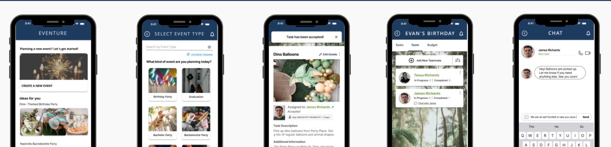

Eventure is out there! Let us help you get there by being the one-stop shop for all your event planning needs! From task creation, to collaboration, to communication, we want to help you plan your best event yet!
Reputable planning applications are advertised/targeted more so to corporate event planners, whereas smaller events often lack collaboration and communication tools. Additionally, users find it difficult to remember all the tasks that need to be completed for an event.
Planning from scratch can be hard! Let Eventure be your one-stop shop! Eventure provides premade, themed tasklist templates that generate possible to-dos before you do! Additionally, our goal is to strengthen task-related communication between all co-planners so that they can complete their best event yet!

When my group and I first got together, we immediately went to the FigJam board to brainstorm potential ideas for phone applications that we would want to tackle for this project. After 10 minutes or so of jotting down ideas onto digital sticky notes, we categorized our ideas into related themes, some of which included concepts related to music, skincare/wellness, and discovery.
After completing a dot voting activity, however, it was decided that the Event Planning sticky note was the winner (as it had the most votes).
When I voted for this idea personally, I saw it as a great opportunity to dive into the current issues users might face when planning an event today and a great topic where we could solve said problems with creative and effective solutions.
.png)
Once we established our application category, my group members and I discussed potential problems our target audience could be experiencing. One concept that came to mind was how there seem to be a lot of applications for bigger groups and companies to use when hosting an event, and not one specifically made for the regular Joes, the birthday party planners, or the small event planners. Another idea was how planners could find it difficult to communicate with a bunch of vendors all at once and how there doesn't seem to be one specific place for users to communicate with them.
After discussing these points and ideas, I was able to capture the characteristics for our proto-persona, Tessa Richards:

Our next step was to outline our User Research plan. For our purposes, we wanted to understand the process and pain points users encounter when organizing/planning events and how users currently collaborate with their peers or vendors to achieve their goals. More specifically, we wanted to create interview questions that would help us answer the following research questions:
After conducting our interviews, we were able to compile and categorize the answers we received (concepts and quotes) into the following affinity chart:
.png)
Based on our findings, we were able to note that planning, communication, tools, and collaboration stuck out as topics of importance. Communication, especially, stuck out as a theme that was important to our users when trying to successfully arrange and plan an event.

In addition to our user interviews, we analyzed a few of our application’s direct and indirect competitors based on our key event-planning factors. By doing so, we were able to identify what they did well, what they could improve on, and what we as a group could do to strengthen our application.

After reflecting on our findings, we consolidated a list of our key insights into the following:
Seeing as how our results were geared more towards the process of organizing oneself and collaborators and task management, we then updated our persona's pain points and goals into something that was more focused on communicating and collaborating with her peers and family members, rather than vendors.


In response to the user challenges discovered through our research, we used an ideation board (I Like, I Wish, What If) as a tool to brainstorm strategies aimed at enhancing collaboration capabilities for users planning an event together.


We then dot voted on the ideas we believed would help our users the most when completing event-related tasks and communicating with their peers and placed them onto a Feature Prioritization Matrix.

As a group, we then decided to focus our user flow on the following solutions that we deemed to be low complexity and high impact:
With these solutions in mind, my group and I worked together to compile the following User Storyboard and Journey Map (I focused more on the Journey Map in this case):


Our next step in the process was to establish a linear user flow that allowed our user to complete the following tasks:


As I was designing the paper prototypes, it was important for me to capture every step to the best of my ability. As I drew, I would think to myself:
Once I drafted my wireframes, I was able to design the following digital lo-fi wireframes and prototype:
Once we came back together as a group, we analyzed what we liked best about each other’s work and what we could bring into our consolidated workflow. After reviewing everyone’s wireframes, I realized how we all interpreted the same workflow in different ways and how important it is to see these points of view first before coming together.

Rather than redesigning the workflow as lo-fi wireframes, I personally learned pretty quickly why designing Mid-Fi/Hi-Fi mockups should be done later in the prototyping process (after establishing a lo-fi version of the consolidated wireframes FIRST). Although we jumped straight into designing a high(ish)-fidelity prototype for this version, our goal was to apply common iOS elements to the design.

Once we had established our design and prototype flow, we were ready to get user input!
When conducting our usability tests, we asked the users/testers to complete the following tasks:
Create a Birthday Event/ Task List using a premade template.
Personalize/update the name of the “Balloons” task.
Add “James Richards” as part of the “Dino Balloons” Task Team.
Respond to James via the Chat feature.
View that the Dinosaur Balloons task was completed.
After completing our initial round of usability testing, we found the following feedback to be the key features we’d want to improve upon for our final iteration:
After iterating our designs based on user feedback, we established the following prototype:
Vendors